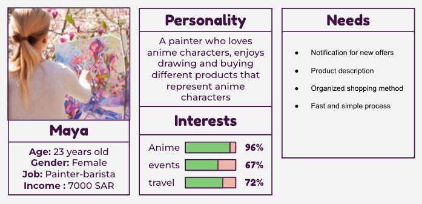
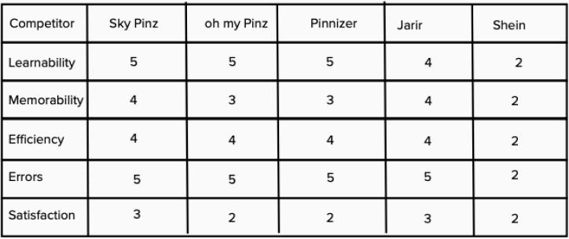
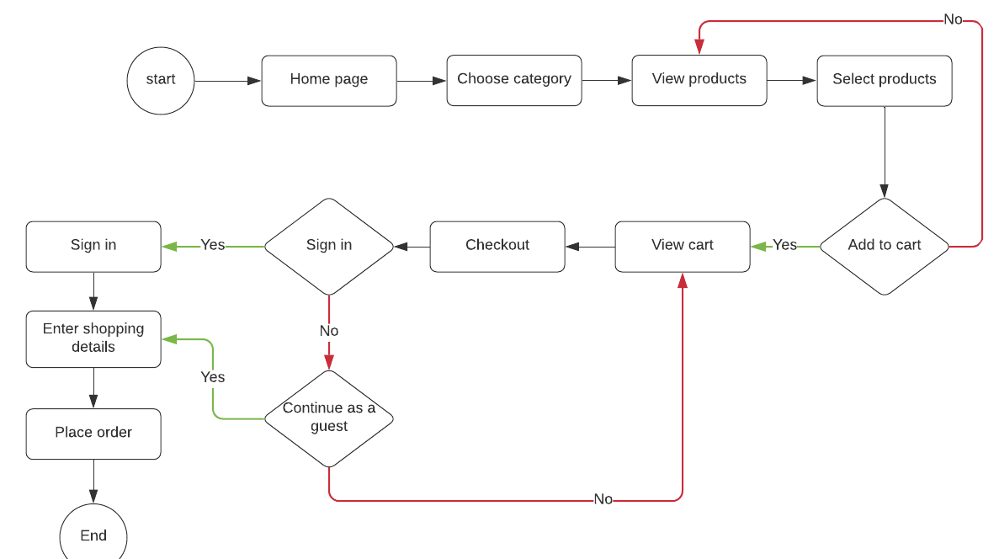
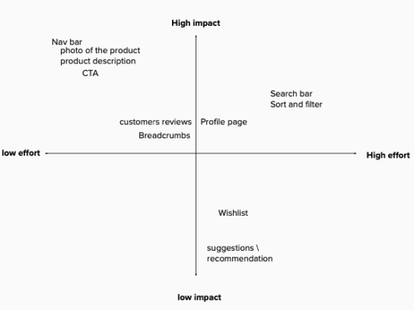

Create a website for local business
This is a project for UX immersive course at Misk Academy. The main objective of this project is to create a website for a local business.
Research
Our task was to conduct user research and business research to develop a solution for customers who buy pins to enhance their shopping experience. Research goal The main objective of this project is to create a platform for Al-Maigliah customers.
User Research
We start with desk research by looking at customers reviews on social media to learn about their shopping experiences and behavior at the store.
User Interviews
We created a screener survey in order to determine the peoples who are interested in pins. From 23 we only interviewed 11. We focused on users who bay online and we asked them about their experience, what they like, and the pain point. In order to come up with a solution to improve the shopping experience.
What people’s said
Here we used affinity mapping that help us to sort and cluster the answers into organizeed group. that helped us find patterns of thinking. Also, show us where the majority of people's minds are focused.

What we found (Insights)
from the answers we reached to : 1- Users prefer to use website than other methods. 2- Users would love to read more about the product in the Product description. 3- Users don’t like to fill out information and go through many steps.4- Users like simple, clear and few products in the page. 5- Users think before buying a product if they need it or not, and they compare between different stores. 6- Users are aware and disappointed when features such as search and related items are not working as intended.
User Persona
From the earlier research and the data, we created a persona that representative of the target users.
Business Research
After understanding the business, we wanted to go into Sara Pins Store's competitors to know how they help their customers during online shopping. Based on our research, we found some direct (local stores) and indirect (global stores) competitors sell the same products. We conducted business research in order to understand the industries and come up with key features for the platform.
Start by Competitive analysis is a technique for gathering and comparing information about companies. We used this strategy to better understand our competitors so that we could develop a solution that was on par with theirs.

Then we did Heuristic evaluation which is a method to measure the usability of user interfaces and report issues.
Key Featuers
From business analysis : 1- Provide a detailed information about every product to increase the customer’s confidence by giving him all the information they needs. 2- website should be easy to use and navigate for a better user experience. 3- Reviews, ratings and filters are valued features.
Problem
Sarah Pins customers faced difficulties related to order placement and product details. They need to have a solution where they can have well-organized and smooth buying experience.
Solution
Provide a website to the customers that display the products in simple and organized way with product description.
User Flow
The user flow takes the user from the start point step by step to the final action to achieve the goal. We define the path the user will take.
Site Map
A sitemap was produced to help visualize the layout and content.

Feature Prioritization MoSCoW
MoSCoW is a prioritization technique for managing requirements.
Key Featuers
- Navgation bar
- Filtration feature
- Provide information about the products
Low - Mid Wireframe
As team we combine our ideas together to shape our product and came with this design ( low fedilty ) by add elements together using figma.

Testing

We conducted usability tests on participants to assess the effectiveness of the website process. Areas for improvement were participants faced some issues on a different screen, some items appeared out of range, large components in the checkout page made it difficult for users to easily navigate, some participants tried to use a sort tool but couldn’t find it.
Prototype

Reflection
This project was beneficial to me, and it demonstrated the importance of desk research. Finding out what people needs were very beneficial. In addition, I feel that my skills improved. If I have more time, I will test and enhance the website design.